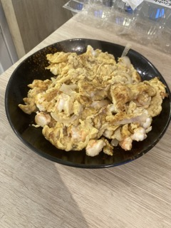

Onion Prawn Egg "Oily Egg"

Description
This is my mom's recipe for Onion Prawn Egg, or what my ahma would call Oily Egg.
Ingredients
- Egg
- Soya Sauce
- Pepper
- Prawn
Steps
- De-shell the prawn, remember to twist and pull out the head.
- Chop up the prawns into small cubes.
- In a bowl, beat about 2 eggs with 1 tspn of soya sauce, 2 shakes of pepper and the prawn cubes.
- Preheat a pan with enough oil to cover its base over low to medium fire.
- Pour the egg mixture into the pan and fry till both sides are evenly cooked.
- Enjoy!